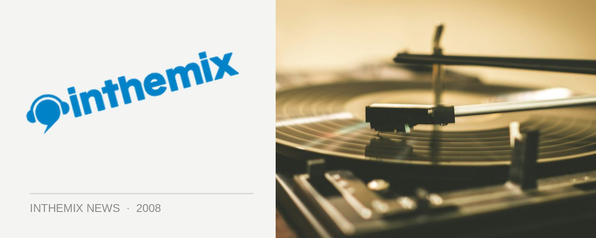

Habit get charitable for the Heart Foundation
Deadmu5 style melodic progressive is tipped to come back in a big way in 2008, a development that would put the Habit crew in good stead indeed – they’re been perhaps Sydney’s only source over the past few years! And if you’re feeling like a slice, then you’ll be able to enjoy it while doing some good for the world – on Saturday March 29th, Habit will be throwing a charity event for the Heart Foundation at the Burdekin, featuring the DJ talents of Robbie Lowe, Adam Jace, Lee Hardy & Razi, James Metcalfe, Jimmy Dau and more.
Habit returns to the Burdekin in support of the Heart Foundation on Saturday March 29th from 10pm-6am, $15 before 12 and $20 after.